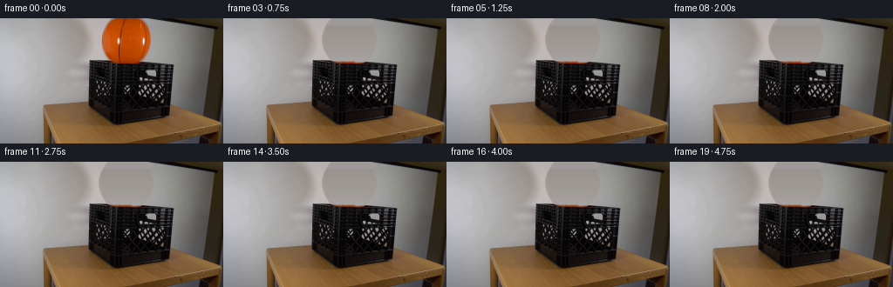
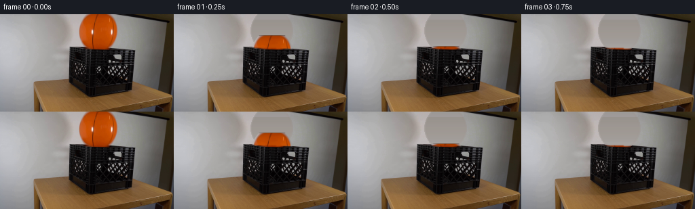
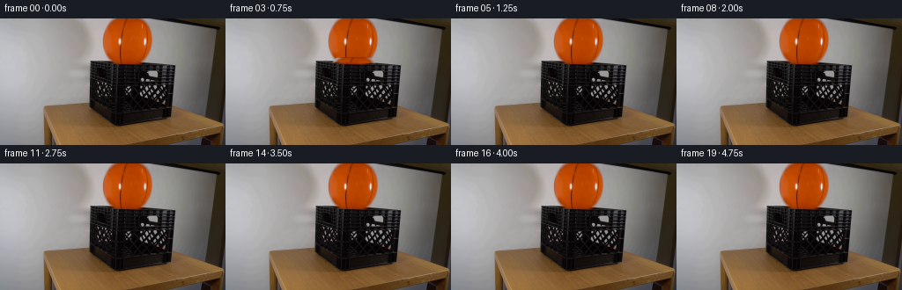
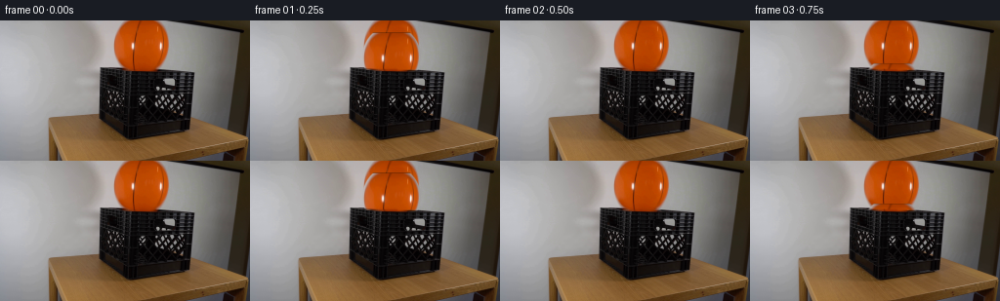

CODING AGENTS AS PIXEL WORLD MODELS
traex/GPT-5.6-Sol · 0013
点击播放 · 原生 RGB 像素
此结果可播放，但该运行尚未通过最终提交审核。页面展示不代表评测通过。
逐轮保存的候选
回放视频、检查图与代码变化。
每份候选均可单独播放。实际图片检查记录在下方工具轨迹中。
候选 01播放与检查图
点击播放 · 原生 RGB 像素


展开代码变化
--- 上一保存版本
+++ 本次保存版本
@@ -0,0 +1,124 @@
+from pathlib import Path
+import cv2
+import numpy as np
+from PIL import Image
+import artifact_io
+
+ROOT = Path(__file__).resolve().parent
+N, H, W = 20, 144, 256
+
+
+def soft_ellipse(h, w, cx, cy, rx, ry, feather=1.4):
+ yy, xx = np.mgrid[:h, :w]
+ q = np.sqrt(((xx-cx)/rx)**2 + ((yy-cy)/ry)**2)
+ return np.clip((1.0 + feather/max(rx,ry) - q) * max(rx,ry)/feather, 0, 1).astype(np.float32)
+
+
+def make_clean_plate(first):
+ """Recover the small wall area hidden by the initially suspended ball."""
+ bgr = first[:, :, ::-1]
+ yy, xx = np.mgrid[:H, :W]
+ hidden = ((((xx-144.0)/31.5)**2 + ((yy-24.0)/32.5)**2) < 1.0) & (yy < 57)
+ replacement = bgr.astype(np.float32).copy()
+ # Robust per-scanline wall colors. Samples are on both sides of the ball.
+ for y in range(57):
+ xs = np.r_[np.arange(57, 101), np.arange(191, 218)] if y >= 8 else np.arange(57, 104)
+ replacement[y, hidden[y]] = np.median(bgr[y, xs].astype(np.float32), axis=0)
+ a = cv2.GaussianBlur((hidden.astype(np.uint8)*255), (7, 7), 0).astype(np.float32)/255.0
+ plate = bgr.astype(np.float32)*(1-a[...,None]) + replacement*a[...,None]
+ return np.uint8(np.clip(plate, 0, 255))[:, :, ::-1]
+
+
+def ball_layer(first, plate):
+ """Extract the photographed ball, while suppressing background fringe."""
+ a = soft_ellipse(H, W, 144.5, 24.0, 29.4, 30.8, 1.0)
+ rgb = first.astype(np.float32).copy()
+ # Extend orange color into the subpixel rim to avoid carrying old wall pixels.
+ core = a > .96
+ for c in range(3):
+ med = cv2.medianBlur(first[:,:,c], 5).astype(np.float32)
+ rim = (a > 0) & ~core
+ rgb[:,:,c][rim] = med[rim]
+ return rgb, a
+
+
+def position_at(t):
+ """Analytic-looking rigid-body trajectory in image space (down is positive)."""
+ # The ball is released from rest, drops into the crate, and makes damped bounces.
+ floor = 82.0 # centre height when resting inside crate
+ y, v, g, e = 24.0, 0.0, 1000.0, .43
+ dt = .0005
+ steps = int(round(t/dt))
+ for _ in range(steps):
+ v += g*dt
+ y += v*dt
+ if y >= floor:
+ y = floor
+ if v > 0:
+ v = -e*v
+ if abs(v) < 38:
+ v, g = 0.0, 0.0
+ # Imperceptibly small lateral settling gives natural asymmetry without camera motion.
+ x = 144.5 + (0.7*(1-np.exp(-2.2*max(0,t-.25))))
+ return x, y
+
+
+def shifted_rgba(rgb, alpha, cx, cy):
+ dx, dy = cx-144.5, cy-24.0
+ M = np.float32([[1,0,dx],[0,1,dy]])
+ col = cv2.warpAffine(rgb, M, (W,H), flags=cv2.INTER_LINEAR,
+ borderMode=cv2.BORDER_CONSTANT, borderValue=(0,0,0)).astype(np.float32)
+ a = cv2.warpAffine(alpha, M, (W,H), flags=cv2.INTER_LINEAR,
+ borderMode=cv2.BORDER_CONSTANT, borderValue=0).astype(np.float32)
+ return col, a
+
+
+def add_contact_shadow(frame, cx, cy):
+ # Shadow appears on the crate interior as the ball approaches its resting point.
+ closeness = np.clip((cy-49.0)/33.0, 0, 1)
+ if closeness <= 0: return frame
+ yy,xx=np.mgrid[:H,:W]
+ sx, sy = 12.0 + 7.0*closeness, 2.3 + 2.4*closeness
+ sh=np.exp(-.5*(((xx-(cx+5))/sx)**2+((yy-85)/sy)**2))*0.18*closeness
+ valid=(yy>72)&(yy<96)&(xx>111)&(xx<182)
+ out=frame.astype(np.float32)
+ out[valid] *= (1-sh[valid,None])
+ return np.uint8(np.clip(out,0,255))
+
+
+def main():
+ first = np.asarray(Image.open(ROOT/'first_frame.png').convert('RGB'), dtype=np.uint8)
+ assert first.shape == (H,W,3)
+ plate = make_clean_plate(first)
+ ball_rgb, ball_a = ball_layer(first, plate)
+
+ # Front face of the real crate is a perfect, photograph-derived occluder. This makes
+ # the descending ball disappear naturally behind the rim/lattice instead of floating
+ # in front. Keep only crate pixels; the hand polygon follows the photographed geometry.
+ front = first.astype(np.float32)
+ crate_mask = np.zeros((H,W), np.uint8)
+ poly=np.array([[103,49],[198,52],[196,106],[145,122],[103,105]],np.int32)
+ cv2.fillConvexPoly(crate_mask, poly, 255)
+ crate_a=cv2.GaussianBlur(crate_mask,(3,3),0).astype(np.float32)/255.0
+
+ frames=[]
+ for i in range(N):
+ if i == 0:
+ frames.append(first.copy())
+ continue
+ t=i/4.0
+ cx,cy=position_at(t)
+ base=add_contact_shadow(plate.copy(),cx,cy).astype(np.float32)
+ col,a=shifted_rgba(ball_rgb,ball_a,cx,cy)
+ composed=base*(1-a[...,None])+col*a[...,None]
+ # crate redraw in front; top rim and lattice consistently occlude the ball
+ composed=composed*(1-crate_a[...,None])+front*crate_a[...,None]
+ frames.append(np.uint8(np.clip(composed,0,255)))
+
+ frames=np.stack(frames).astype(np.uint8)
+ frames[0]=first # explicit pixel-identity guarantee
+ artifact_io.save(frames, ROOT)
+
+
+if __name__ == '__main__':
+ main()
候选 02播放与检查图
点击播放 · 原生 RGB 像素


展开代码变化
--- 上一保存版本
+++ 本次保存版本
@@ -15,18 +15,15 @@
def make_clean_plate(first):
- """Recover the small wall area hidden by the initially suspended ball."""
+ """Recover the wall hidden by the ball from a neighboring patch of the same wall."""
bgr = first[:, :, ::-1]
- yy, xx = np.mgrid[:H, :W]
- hidden = ((((xx-144.0)/31.5)**2 + ((yy-24.0)/32.5)**2) < 1.0) & (yy < 57)
- replacement = bgr.astype(np.float32).copy()
- # Robust per-scanline wall colors. Samples are on both sides of the ball.
- for y in range(57):
- xs = np.r_[np.arange(57, 101), np.arange(191, 218)] if y >= 8 else np.arange(57, 104)
- replacement[y, hidden[y]] = np.median(bgr[y, xs].astype(np.float32), axis=0)
- a = cv2.GaussianBlur((hidden.astype(np.uint8)*255), (7, 7), 0).astype(np.float32)/255.0
- plate = bgr.astype(np.float32)*(1-a[...,None]) + replacement*a[...,None]
- return np.uint8(np.clip(plate, 0, 255))[:, :, ::-1]
+ # Seamless cloning preserves the photographed wall texture and illumination while
+ # removing the orange object; source is an immediately adjacent empty wall region.
+ src = bgr[0:58, 48:112].copy()
+ mask = np.zeros((58, 64), np.uint8)
+ cv2.ellipse(mask, (32, 26), (29, 29), 0, 0, 360, 255, -1)
+ plate = cv2.seamlessClone(src, bgr, mask, (144, 29), cv2.MIXED_CLONE)
+ return plate[:, :, ::-1]
def ball_layer(first, plate):
@@ -46,7 +43,7 @@
"""Analytic-looking rigid-body trajectory in image space (down is positive)."""
# The ball is released from rest, drops into the crate, and makes damped bounces.
floor = 82.0 # centre height when resting inside crate
- y, v, g, e = 24.0, 0.0, 1000.0, .43
+ y, v, g, e = 24.0, 0.0, 400.0, .50
dt = .0005
steps = int(round(t/dt))
for _ in range(steps):
@@ -56,7 +53,7 @@
y = floor
if v > 0:
v = -e*v
- if abs(v) < 38:
+ if abs(v) < 25:
v, g = 0.0, 0.0
# Imperceptibly small lateral settling gives natural asymmetry without camera motion.
x = 144.5 + (0.7*(1-np.exp(-2.2*max(0,t-.25))))
可观测工具轨迹
实际执行的命令与返回图片。
命令 1exit 0
/bin/bash -lc "cat prompt.txt && printf '\\n--- GENERATION_RULES ---\\n' && cat GENERATION_RULES.md"
命令 2exit 0
/bin/bash -lc "find . -maxdepth 2 -type f -printf '%p\\n' | sort && printf '\\n--- tools ---\\n' && command -v ffmpeg || true && command -v python3 || true"
命令 3exit 0
/bin/bash -lc "cat artifact_io.py && python3 - <<'PY'
from PIL import Image
im=Image.open('first_frame.png')
print(im.mode, im.size)
PY"命令 4exit 0
/bin/bash -lc "python3 - <<'PY' mods=['cv2','numpy','PIL','scipy'] for m in mods: try: q=__import__(m);print(m,'ok',getattr(q,'__version__','')) except Exception as e: print(m,e) PY"
命令 5exit 0
/bin/bash -lc "python3 - <<'PY'
from PIL import Image
im=Image.open('first_frame.png')
im.crop((85,35,210,130)).resize((750,570)).save('.tmp/crate_zoom.png')
PY"命令 6exit 0
/bin/bash -lc "python3 - <<'PY' y=25;v=0;g=1000;floor=82;e=.42;dt=.0001 vals=[] for k in range(50001): t=k*dt if abs(t*4-round(t*4))<dt/2:vals.append((t,y,v)) v+=g*dt;y+=v*dt if y>=floor: y=floor if v>0: v=-e*v if abs(v)<38: v=0;g=0 print(vals[:20]) PY"
命令 7exit 0
/bin/bash -lc "cat > .tmp/testplate.py <<'PY'
import cv2,numpy as np
from PIL import Image
im=cv2.imread('first_frame.png')
h,w=im.shape[:2]
y,x=np.ogrid[:h,:w]
mask=(((x-144.5)/29.5)**2+((y-24.0)/31.0)**2<1.1).astype(np.uint8)*255
# only y < 56
mask[y.repeat(w,axis=1)>56]=0
for r,flag in [(3,cv2.INPAINT_TELEA),(7,cv2.INPAINT_TELEA),(3,cv2.INPAINT_NS)]:
out=cv2.inpaint(im,mask,r,flag)
cv2.imwrite(f'.tmp/plate_{r}_{flag}.png',out)
PY
python3 .tmp/testplate.py"命令 8exit 0
/bin/bash -lc "python3 - <<'PY'
import cv2,numpy as np
im=cv2.imread('first_frame.png');h,w=im.shape[:2]
mask=np.zeros((h,w),np.uint8); cv2.ellipse(mask,(144,24),(31,32),0,0,360,255,-1); mask[58:]=0
# wall destination use gaussian blur + cloning from left shift, nearest rows; patch includes mostly wall
for dx in [35,50,65]:
src=np.roll(im,dx,axis=1)
# Want source at output x from output x-dx if rolled right. x 115-175 sourced 65-125 wall.
m=cv2.GaussianBlur(mask,(5,5),0).astype(float)[:,:,None]/255
out=(im*(1-m)+src*m).astype(np.uint8)
cv2.imwrite(f'.tmp/copy{dx}.png',out)
PY"命令 9exit 0
/bin/bash -lc "python3 - <<'PY'
import cv2,numpy as np
im=cv2.imread('first_frame.png');h,w=im.shape[:2];Y,X=np.mgrid[:h,:w]
mask=((((X-144.5)/30.0)**2+((Y-24)/31)**2)<1).astype(np.uint8)*255;mask[Y>55]=0
# synth using row values based horizontal average from x50:105 and x180:215, per y, polynomial? feather
out=im.copy().astype(float)
# target wall approximate linear RGB from samples x=70..100 and 185..205, excluding screen at y<7 on right
for yy in range(0,56):
# pick left stripe 92:106 mostly wall; but shadow. farther 60:95. interpolate average gradient
xs=np.r_[np.arange(55,100), np.arange(190,220)] if yy>=8 else np.arange(55,105)
vals=im[yy,xs].astype(float)
# median
col=np.median(vals,axis=0)
# add subtle horiz model from left wall; constant works
out[yy,:,]=out[yy,:,]
out[yy,mask[yy]>0]=col
# feather original mask edges
soft=cv2.GaussianBlur(mask,(9,9),0).astype(float)[:,:,None]/255
res=(im*(1-soft)+out*soft).astype(np.uint8)
cv2.imwrite('.tmp/medianplate.png',res)
PY"命令 10exit 0
/bin/bash -lc "cat > generate.py <<'PY'
from pathlib import Path
import cv2
import numpy as np
from PIL import Image
import artifact_io
ROOT = Path(__file__).resolve().parent
N, H, W = 20, 144, 256
def soft_ellipse(h, w, cx, cy, rx, ry, feather=1.4):
yy, xx = np.mgrid[:h, :w]
q = np.sqrt(((xx-cx)/rx)**2 + ((yy-cy)/ry)**2)
return np.clip((1.0 + feather/max(rx,ry) - q) * max(rx,ry)/feather, 0, 1).astype(np.float32)
def make_clean_plate(first):
\"\"\"Recover the small wall area hidden by the initially suspended ball.\"\"\"
bgr = first[:, :, ::-1]
yy, xx = np.mgrid[:H, :W]
hidden = ((((xx-144.0)/31.5)**2 + ((yy-24.0)/32.5)**2) < 1.0) & (yy < 57)
replacement = bgr.astype(np.float32).copy()
# Robust per-scanline wall colors. Samples are on both sides of the ball.
for y in range(57):
xs = np.r_[np.arange(57, 101), np.arange(191, 218)] if y >= 8 else np.arange(57, 104)
replacement[y, hidden[y]] = np.median(bgr[y, xs].astype(np.float32), axis=0)
a = cv2.GaussianBlur((hidden.astype(np.uint8)*255), (7, 7), 0).astype(np.float32)/255.0
plate = bgr.astype(np.float32)*(1-a[...,None]) + replacement*a[...,None]
return np.uint8(np.clip(plate, 0, 255))[:, :, ::-1]
def ball_layer(first, plate):
\"\"\"Extract the photographed ball, while suppressing background fringe.\"\"\"
a = soft_ellipse(H, W, 144.5, 24.0, 29.4, 30.8, 1.0)
rgb = first.astype(np.float32).copy()
# Extend orange color into the subpixel rim to avoid carrying old wall pixels.
core = a > .96
for c in range(3):
med = cv2.medianBlur(first[:,:,c], 5).astype(np.float32)
rim = (a > 0) & ~core
rgb[:,:,c][rim] = med[rim]
return rgb, a
def position_at(t):
\"\"\"Analytic-looking rigid-body trajectory in image space (down is positive).\"\"\"
# The ball is released from rest, drops into the crate, and makes damped bounces.
floor = 82.0 # centre height when resting inside crate
y, v, g, e = 24.0, 0.0, 1000.0, .43
dt = .0005
steps = int(round(t/dt))
for _ in range(steps):
v += g*dt
y += v*dt
if y >= floor:
y = floor
if v > 0:
v = -e*v
if abs(v) < 38:
v, g = 0.0, 0.0
# Imperceptibly small lateral settling gives natural asymmetry without camera motion.
x = 144.5 + (0.7*(1-np.exp(-2.2*max(0,t-.25))))
return x, y
def shifted_rgba(rgb, alpha, cx, cy):
dx, dy = cx-144.5, cy-24.0
M = np.float32([[1,0,dx],[0,1,dy]])
col = cv2.warpAffine(rgb, M, (W,H), flags=cv2.INTER_LINEAR,
borderMode=cv2.BORDER_CONSTANT, borderValue=(0,0,0)).astype(np.float32)
a = cv2.warpAffine(alpha, M, (W,H), flags=cv2.INTER_LINEAR,
borderMode=cv2.BORDER_CONSTANT, borderValue=0).astype(np.float32)
return col, a
def add_contact_shadow(frame, cx, cy):
# Shadow appears on the crate interior as the ball approaches its resting point.
closeness = np.clip((cy-49.0)/33.0, 0, 1)
if closeness <= 0: return frame
yy,xx=np.mgrid[:H,:W]
sx, sy = 12.0 + 7.0*closeness, 2.3 + 2.4*closeness
sh=np.exp(-.5*(((xx-(cx+5))/sx)**2+((yy-85)/sy)**2))*0.18*closeness
valid=(yy>72)&(yy<96)&(xx>111)&(xx<182)
out=frame.astype(np.float32)
out[valid] *= (1-sh[valid,None])
return np.uint8(np.clip(out,0,255))
def main():
first = np.asarray(Image.open(ROOT/'first_frame.png').convert('RGB'), dtype=np.uint8)
assert first.shape == (H,W,3)
plate = make_clean_plate(first)
ball_rgb, ball_a = ball_layer(first, plate)
# Front face of the real crate is a perfect, photograph-derived occluder. This makes
# the descending ball disappear naturally behind the rim/lattice instead of floating
# in front. Keep only crate pixels; the hand polygon follows the photographed geometry.
front = first.astype(np.float32)
crate_mask = np.zeros((H,W), np.uint8)
poly=np.array([[103,49],[198,52],[196,106],[145,122],[103,105]],np.int32)
cv2.fillConvexPoly(crate_mask, poly, 255)
crate_a=cv2.GaussianBlur(crate_mask,(3,3),0).astype(np.float32)/255.0
frames=[]
for i in range(N):
if i == 0:
frames.append(first.copy())
continue
t=i/4.0
cx,cy=position_at(t)
base=add_contact_shadow(plate.copy(),cx,cy).astype(np.float32)
col,a=shifted_rgba(ball_rgb,ball_a,cx,cy)
composed=base*(1-a[...,None])+col*a[...,None]
# crate redraw in front; top rim and lattice consistently occlude the ball
composed=composed*(1-crate_a[...,None])+front*crate_a[...,None]
frames.append(np.uint8(np.clip(composed,0,255)))
frames=np.stack(frames).astype(np.uint8)
frames[0]=first # explicit pixel-identity guarantee
artifact_io.save(frames, ROOT)
if __name__ == '__main__':
main()
PY
python3 generate.py
python3 - <<'PY'
import numpy as np
from PIL import Image
z=np.load('pixels.npz')['pixels']
frames=np.stack([((z[:,:,i,None]>>np.array([16,8,0]))&255).astype(np.uint8) for i in range(z.shape[2])])
first=np.asarray(Image.open('first_frame.png').convert('RGB'))
print('frames',frames.shape,frames.dtype,'first_equal',np.array_equal(frames[0],first))
print('frame MADs', [round(np.abs(frames[i].astype(int)-frames[i-1].astype(int)).mean(),2) for i in range(1,20)])
PY"命令 11exit 0
/bin/bash -lc "python3 - <<'PY'
import cv2,numpy as np
im=cv2.imread('first_frame.png')
# patches same target dimensions x113..176 y0..57, source x48..111
for typ in [cv2.NORMAL_CLONE,cv2.MIXED_CLONE,cv2.MONOCHROME_TRANSFER]:
src=im[0:58,48:112].copy(); mask=np.zeros((58,64),np.uint8);cv2.ellipse(mask,(32,26),(29,29),0,0,360,255,-1)
out=cv2.seamlessClone(src,im,mask,(144,29),typ)
cv2.imwrite(f'.tmp/clone{typ}.png',out)
PY"命令 12exit 0
/bin/bash -lc "python3 - <<'PY'
for g0,e in [(550,.45),(400,.5),(300,.5)]:
print(g0)
for ti in [i/4 for i in range(8)]:
y=24.;v=0;g=g0;dt=.0005
for _ in range(int(ti/dt)):
v+=g*dt;y+=v*dt
if y>=82:
y=82
if v>0:
v=-e*v
if abs(v)<25:v=0;g=0
print(ti,round(y,1),round(v,1))
PY"命令 13exit 0
/bin/bash -lc "python3 - <<'PY'
from pathlib import Path
p=Path('generate.py')
s=p.read_text()
start=s.index('def make_clean_plate(first):')
end=s.index('\\n\\ndef ball_layer',start)
new='''def make_clean_plate(first):
\"\"\"Recover the wall hidden by the ball from a neighboring patch of the same wall.\"\"\"
bgr = first[:, :, ::-1]
# Seamless cloning preserves the photographed wall texture and illumination while
# removing the orange object; source is an immediately adjacent empty wall region.
src = bgr[0:58, 48:112].copy()
mask = np.zeros((58, 64), np.uint8)
cv2.ellipse(mask, (32, 26), (29, 29), 0, 0, 360, 255, -1)
plate = cv2.seamlessClone(src, bgr, mask, (144, 29), cv2.MIXED_CLONE)
return plate[:, :, ::-1]
'''
s=s[:start]+new+s[end:]
s=s.replace('y, v, g, e = 24.0, 0.0, 1000.0, .43','y, v, g, e = 24.0, 0.0, 400.0, .50')
s=s.replace('if abs(v) < 38:', 'if abs(v) < 25:')
p.write_text(s)
PY
python3 generate.py"命令 14exit 0
/bin/bash -lc "python3 - <<'PY'
import cv2,numpy as np
im=cv2.imread('first_frame.png')
for typ in [cv2.NORMAL_CLONE,cv2.MIXED_CLONE]:
src=im[0:58,48:112].copy(); mask=np.zeros((58,64),np.uint8);cv2.ellipse(mask,(32,26),(31,31),0,0,360,255,-1)
out=cv2.seamlessClone(src,im,mask,(144,29),typ)
cv2.imwrite(f'.tmp/clonebig{typ}.png',out)
PY"命令 15exit 0
/bin/bash -lc "python3 - <<'PY'
import cv2,numpy as np
im=cv2.imread('first_frame.png')
for sx in [40,50,60,70,80]:
src=im[0:58,sx:sx+64].copy(); mask=np.zeros((58,64),np.uint8);cv2.ellipse(mask,(32,27),(30,30),0,0,360,255,-1)
out=cv2.seamlessClone(src,im,mask,(144,29),cv2.NORMAL_CLONE)
cv2.imwrite(f'.tmp/clonen{sx}.png',out)
PY"保存候选 2 份；完成命令 15 次；可验证图片返回 0 张。原始 API 响应与完整日志保留在本地。